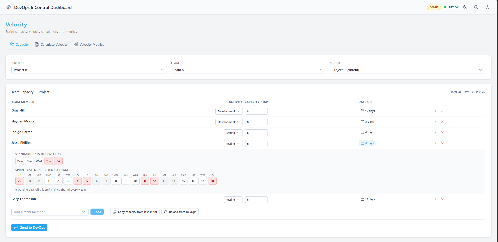

Velocity & Capacity
This screen helps you plan sprint capacity and track your team's velocity. You can view and edit each team member's available hours, mark days off, and see how much work the team can take on.

The Capacity tab with team member hours and a day-off calendar.
How to Use It
- Open Velocity from the sidebar.
- The screen has three tabs: Capacity, Calculate Velocity, and Velocity Metrics.
- For the Capacity and Calculate Velocity tabs, select your Project, Team, and Sprint from the dropdowns at the top.
Capacity Tab
Editing Capacity
- Each row shows a team member with their activity (Development, Testing, Design, etc.) and capacity per day.
- Click on a value to edit it directly.
- Use the day-off calendar to toggle individual days off for each person. Click a day to mark it as a day off; click again to remove it.
- Use the weekday checkboxes to set standard days off (e.g. every Friday off).
Handy Buttons
| Button | What It Does |
|---|---|
| Copy from previous sprint | Copies the capacity settings from the previous sprint. Useful when your team stays the same. |
| Reload from DevOps | Refreshes the capacity data from Azure DevOps, discarding any unsaved local changes. |
| Save to DevOps | Sends your capacity changes back to Azure DevOps. You will be asked to confirm before saving. |
| Add member | Add a team member to the capacity table. |
| Remove member (✕) | Remove a team member from the capacity table for this sprint. |
Calculate Velocity Tab
The Calculate Velocity tab computes a velocity ratio from a specific sprint's data. Select a project, team, last completed sprint, and target sprint to see:
- Velocity ratio — Story points completed ÷ total capacity hours from the selected sprint.
- Projected points — The estimated story points the team can handle in the target sprint, based on the ratio and planned capacity.
You can optionally override the story points used for the calculation and toggle whether to include unassigned capacity.
Velocity Metrics Tab
The Velocity Metrics tab shows charts of story points across recent sprints for all your monitored projects. Each project card displays:
- Initial Scope — Story points at the start of the sprint.
- Burned SP — Story points completed.
- Prognosis — Projected points for future sprints based on past averages.
Team Selector
If a project has multiple teams, a Team dropdown appears on each project card. Click it to expand the list and select a different team. The chart will reload with that team's specific sprints and data. Your team selection is remembered for next time.
Sprint Filter
Each project card also has a Sprints dropdown that lets you show or hide individual sprints from the chart. Use the checkboxes to toggle sprints on or off.
Project Filter
Click the Filter button at the top to show or hide entire projects from the metrics view.